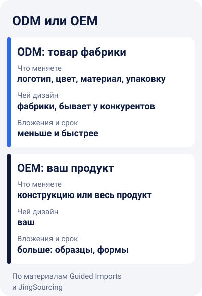
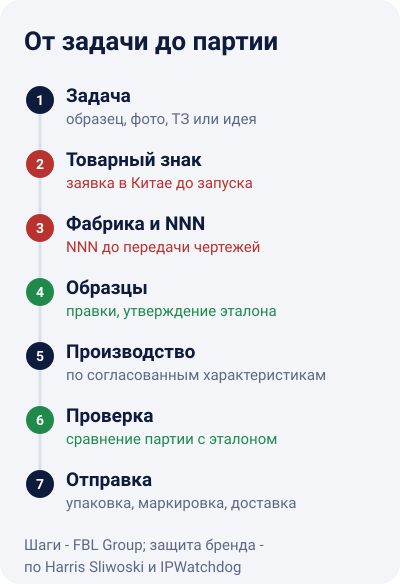

Производство в Китае под своим брендом: ODM или OEM, образец и защита бренда
Чтобы запустить в Китае товар под своим брендом, до оплаты партии нужно принять три решения. Первое - путь: взять готовый товар фабрики и поставить на него свой логотип (ODM) или сделать свой продукт по своему заданию (OEM). Второе - утвердить эталонный образец, с которым потом сравнивают партию. Третье - защитить бренд: зарегистрировать товарный знак в Китае и подписать с фабрикой NNN-соглашение.
Ниже разберём каждое решение и шаги от задачи до готовой партии. Если хотите обсудить свой товар сразу, оставьте заявку.
ODM или OEM: два пути к своему товару
ODM - вы выбираете готовый товар из каталога фабрики, вносите небольшие изменения и продаёте под своим брендом2. Менять можно упаковку, комплектацию, цвет, брендинг, а в небольших пределах - детали или функции2. Такой путь ещё называют private label2.
OEM - продукт целиком придумываете вы, а фабрика делает его по вашим требованиям2. Пример - одежда собственного дизайна, а не стандартная модель с вашим логотипом2.
| ODM | OEM | |
|---|---|---|
| Что меняете | логотип, цвет, материал, упаковку | конструкцию или весь продукт |
| Чей дизайн | фабрики, его могут купить и другие | ваш |
| Вложения и срок | меньше, срок короче | больше, срок дольше |
По оценке JingSourcing, у ODM меньше вложений и быстрее старт, поэтому он подходит, чтобы проверить спрос с небольшим бюджетом1. Минус в том, что тот же дизайн может продаваться и у конкурентов, и тогда покупатель чаще выбирает по цене2.
OEM даёт полный контроль над дизайном2, но обычно требует нескольких кругов образцов, тестов и правок1. Если конструкция сильно меняется, готовых форм у фабрики часто нет, и их делают под ваш продукт1. По оценке закупочного агента JingSourcing, разработка формы обычно занимает около месяца1.

Что прислать фабрике
Начать можно с того, что у вас уже есть: образца, фотографии, чертежей или технического задания, ссылки на похожий товар, идеи. Чем точнее описание, тем меньше кругов образцов и споров о том, что имелось в виду. Опишите:
- Назначение товара и кто им пользуется.
- Материалы и фурнитуру, если они важны.
- Размеры, цвета, допустимые отклонения.
- Логотип: какой, где и каким способом нанести.
- Упаковку и маркировку, в том числе требования маркетплейса.
- Объём партии и к какой дате она нужна.
Описание и эталонный образец работают вместе: по ним инспектор потом проверяет товар3.
Эталонный образец: с чем сравнивают партию
Эталонный образец (golden sample) - это образец, который фабрика присылает до массового производства. Он полностью соответствует вашим требованиям к качеству3. С ним потом сравнивают всю продукцию3.
Обычно образец утверждают так3:
- Фабрика присылает образцы до запуска производства.
- Вы проверяете их и утверждаете или отклоняете.
- Если отклонили, фабрика делает новые.
- После утверждения фабрика запускает производство.
Утверждённые образцы подписывают, ставят дату и опечатывают3. Обычно их нужно несколько: один остаётся на фабрике, часть - для инспекторов, один - у вас3.
Зачем это нужно, видно на примере из статьи HKTDC. Кружки должны быть тёмно-малиновыми, а с конвейера сходят ярко-красные. Фабрика говорит, что они красные, как и заказано. Сравнение с утверждённым образцом показывает разницу3.
На проверке перед отгрузкой инспектор берёт эталонный образец на фабрику и сравнивает с ним товар из партии3. Как устроена такая проверка, мы разбирали в статье о проверке качества товара в Китае.
Товарный знак в Китае: до запуска производства
В Китае приоритет на товарный знак обычно получает тот, кто первым подал заявку4. Регистрация знака в другой стране сама по себе прав в Китае не даёт4. Это подтверждает и China IP SME Helpdesk Европейской комиссии: знак, зарегистрированный в ЕС, в Китае не защищён5.
«Мы не продаём в Китае» от проблемы не спасает. Ваш бренд стоит на товаре, этикетках и упаковке, пока они в Китае, и чужая регистрация может помешать уже там4. Владелец знака может внести его в реестр таможни Китая, а таможня может задержать подозрительный товар не только на ввозе, но и на вывозе4.
Юристы Harris Sliwoski приводят такие случаи из своей практики. Китайский производитель американской компании без разрешения зарегистрировал 17 её товарных знаков. Потом он предложил её клиентам тот же товар на 40% дешевле4. У канадской компании таможня Китая остановила крупную партию курток: её бренд зарегистрировал кто-то другой. В итоге компания выкупила знак за шестизначную сумму4.
Что учесть при подаче:
- Срок. Подать заявку недолго, но регистрация занимает время. Кто ждёт первого заказа или первой партии, уже опоздал4.
- Классы и подклассы. Китай использует Ниццкую классификацию, но многие классы делит ещё на подклассы4. Компания из того же разбора зарегистрировала знак для перчаток как одежды, а продавала защитные рабочие перчатки. Эти товары попали в другой раздел, и регистрация от проблемы не защитила4.
- Слово и логотип. Если вы используете название без логотипа, регистрация только комбинированного знака, где название и логотип идут вместе, может защищать хуже, чем отдельные заявки на название и на логотип4.
Как и где подавать заявку, лучше решить с юристом, который работает с товарными знаками в Китае.
NNN-соглашение с фабрикой
NNN - это соглашение о неразглашении, неиспользовании и необходе (Non-Disclosure, Non-Use, Non-Circumvention)6. Обычное соглашение о конфиденциальности (NDA) запрещает раскрывать сведения третьим лицам. NNN ещё и запрещает фабрике использовать ваши сведения в своих целях6. По словам IP-юриста Люси Чэнь, NNN-соглашение стало стандартным первым шагом в работе с китайскими компаниями, особенно с OEM-производителями6.
От чего оно защищает. Среди типичных нарушений NNN Люси Чэнь называет три. Фабрика делает ваш товар для конкурентов, оставляет товар себе, чтобы продавать самой, или на основе ваших сведений делает и продаёт похожий товар6. Поэтому, кроме NNN, советуют защищать в Китае и сам бренд, дизайн и изобретения6.
Что стоит прописать:
- Срок действия. В практике Jiaquan IP Law соглашение обычно действует ещё два-три года после окончания сотрудничества, по договорённости можно дольше6.
- Возврат прав. Пропишите, что если фабрика без письменного согласия подаст заявку на патент, товарный знак или авторское право, эти права передаются вам6.
- Если есть только идея. Когда фабрика сама доводит идею до продукта, может больше подойти договор на разработку, где прописано, кому принадлежат дизайн и права6.
Товарный знак не заменяет NNN, договор на производство и защиту дизайна: каждый документ закрывает свой риск4. Текст NNN и других договоров с фабрикой тоже лучше готовить с юристом.
Путь от задачи до готовой партии
- Задача. Образец, фото, ТЗ или идея.
- Заявка на товарный знак. В Китае, до запуска производства.
- Фабрика и NNN. Подбор производителя и материалов, NNN с выбранной фабрикой до передачи ей чертежей и деталей продукта.
- Образцы. Изготовление, правки, утверждение эталона.
- Производство. Партия по согласованным характеристикам.
- Проверка. Сравнение партии с эталоном до отгрузки.
- Отправка. Упаковка, маркировка, доставка.

Как выбрать способ доставки готовой партии, мы рассказали в статье о выборе между авиа, авто, ж/д и морем. Если подходящий товар уже есть в продаже и делать свой не нужно, проще работать с посредником: как выбрать его, разобрано в статье о байерах и агентах.
Как работает FBL Group
Мы производим продукцию под бренд клиента. Начать можно с образца, фотографии, чертежей, технического задания, ссылки или идеи. Подбираем фабрику и материалы, делаем образец и вносим правки, фиксируем с фабрикой характеристики готового товара. Партию запускаем после утверждения образца.
Если нужен товар лучше образца, например плотнее ткань или другая конструкция, прорабатываем это с фабрикой. Себестоимость при этом обсуждаем открыто. Мы не ограничены одной категорией товаров. Например, у нас есть опыт производства одежды. Производство контролируем и проверяем готовый товар до отправки.
Подробнее - на странице производства в Китае.
Коротко
- ODM - готовый товар фабрики под вашим брендом, быстрее и дешевле на старте. OEM - ваш собственный продукт, дольше и дороже.
- Опишите товар подробно: материалы, размеры, логотип, упаковку, объём и срок.
- Утвердите эталонный образец, подпишите и опечатайте его. С ним сравнивают партию.
- Подайте заявку на товарный знак в Китае до запуска производства, в нужных классах и подклассах.
- Подпишите с выбранной фабрикой NNN-соглашение до того, как передадите ей детали продукта.
Чтобы обсудить производство вашего товара, оставьте заявку.
Статья носит информационный характер и не является юридической консультацией. Регистрацию товарного знака и договоры с фабрикой обсудите с юристом, который работает с Китаем.
Чем поможет FBL Group
- Закупка в Китае — найдём товар и поставщика, проведём переговоры, выкупим заказ.
- Производство в Китае — по образцу, фото или ТЗ, в том числе под ваш бренд.
- Проверка товара — на нашем складе или с выездом к поставщику, с фото и видео.
- Доставка из Китая — авиа, авто, ж/д или море, карго или белая.
Читайте также
Источники
- JingSourcing. OEM vs ODM in China: How It Really Works for Small Businesses (на английском).
- Guided Imports. ODM vs. OEM: What's the Difference?, 5 февраля 2026 (на английском).
- HKTDC Sourcing (Insight Quality Services). What is a Golden Sample in Manufacturing, and Why are They Essential? (на английском).
- China Law Blog, Harris Sliwoski. Manufacturing in China: China Trademark Registration Should Be the First Thing You Do (на английском).
- China IP SME Helpdesk (European Commission, EISMEA). Trademark Search and Trademark Registration Via National Route, 10 февраля 2025 (на английском).
- IPWatchdog, Lucy Chen. Understanding ‘NNN’ Agreements in China, 11 августа 2022 (на английском).
Ссылки проверены 23 ноября 2026. Статья — общие рекомендации, а не юридическая консультация.